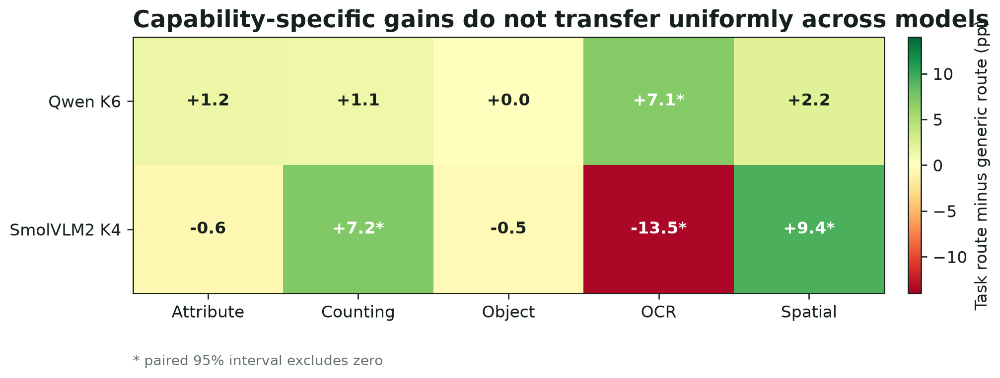
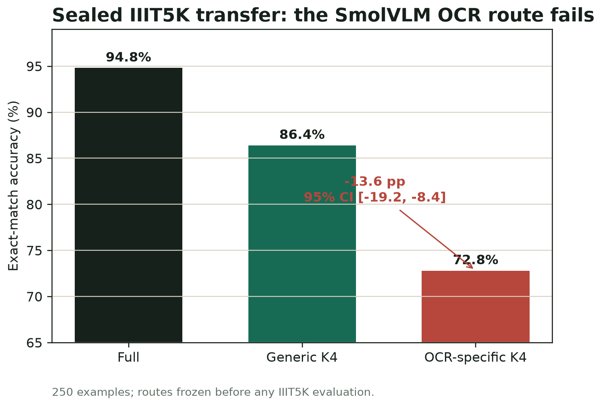

What generalizes
Combinatorial route search.
What does not
A universal capability-to-layer map.
Method
Skip the same amount.
Search a better combination.
Each route replaces K vision-transformer blocks with identity. At a fixed K, evolutionary search balances mean loss, worst-source loss, source variability, and collateral capability damage. No weights are updated.

Main result
Search beats simple construction on both models.
Qwen is completed at K4/K6/K8. SmolVLM2 is a separate K4 replication; no missing points are interpolated.

Cross-model analysis
The sign changes with architecture and capability.
Positive values favor the capability route over the evolved generic route at the same budget. Asterisks mark paired intervals that exclude zero.


Sealed transfer
A useful failure, not a footnote.
The internal OCR-specific route did not transfer to a fresh OCR source. That result narrows the claim: route search is reproducible, but capability labels alone do not define stable pathways.
Task-aware routing is conditional evidence, not a universal compression rule.
Efficiency
Meaningful vision savings.
Modest whole-model savings.

Reproducible package
Every plotted number traces back to committed frozen JSON.
Run one CPU-only command to regenerate 21 figure files, manuscript tables, and a machine-checkable paper data manifest.
make PYTHON=.paper-venv/bin/python submission